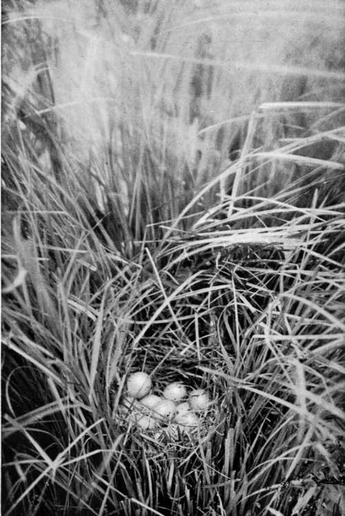
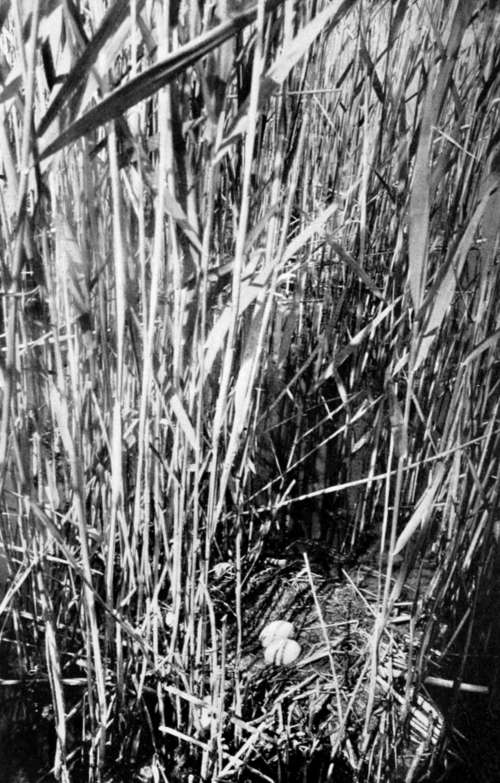

IX. Birds'-Nesting In Hungary
Description
This section is from the book "Bird-Hunting Through Wild Europe", by R. B. Lodge. Also available from Amazon: Bird-Hunting Through Wild Europe.
IX. Birds'-Nesting In Hungary
In all the capitals where I carried introductions to the leading naturalists I met with a most cordial reception and the greatest possible kindness. And to the circle of ornithologists in Budapest I shall feel ever grateful for their cordiality and hospitality. I say circle advisedly, for they resemble more a family circle, every member of which sympathizes with the tastes and likings of the rest, and when a stranger of like mind arrives in their midst they vie with one another in entertaining him and helping him to the utmost of their ability.
Hungary, too, is a country of extreme interest to the ornithologist, although to the casual traveller no doubt it may appear not particularly likely or suitable for any large number of birds.
As a matter of opinion, without the opportunity of consulting statistics, I should say that the list of Hungarian birds would show that the country is second to none in Europe in the richness of its bird fauna. Russia probably would show a larger number with its vast area, embracing as it does both the birds of Northern and Southern Europe with the overlapping of Asiatic and Eastern species ; but with that exception Hungary has few rivals. Nor is this surprising when its central position is considered, for this necessarily ensures its being in the path of the migrating hosts from north to south and vice versa every spring and autumn. There is also every diversity of feature within its boundaries, so that every class of bird can find a suitable habitat. The Danube runs the whole length of the country, and its many tributaries and almost impenetrable swamps are inhabited by countless numbers of marsh birds, waders, and water-fowl. There are also many remote lakes of large size where other birds of the same class, as well as a great diversity of smaller warblers, can find a safe refuge. Its woods and forests shelter many birds of prey, and in its mountains are still to be found the Griffon Vulture and other large raptores, and the vast plains are an attraction to the Bustards and similar ground birds.
Even in Budapest itself it is possible to see many most interesting forms of bird life. In the parks, and especially on the Margareten Island, there are Hoopoes, Golden Orioles, and Red-footed Falcons, besides hosts of Tits and Finches, which find protection and encouragement in the form of nesting-boxes in the spring and feeding-tables during the winter months.
Nest Of Spotted Crake (Porzaxa Maruetta)
Last February a Wall-Creeper (Trichodroma murarid) was seen daily on the rocks on the Buda side of the Danube, no doubt having been driven from its mountain home by the heavy snow then prevailing everywhere throughout Europe. The Danube was then almost blocked by great masses of ice floating down the turgid current, which was nearly up to the level of the embankments. On these blocks of ice were many Goosanders, Smews, and Red-throated Divers, and it was interesting in the extreme to be able to watch these birds in the middle of a large city.
Later in the year there were immense numbers of Sparrows roosting in the bushes in the squares. There must have been thousands of them, and when bed-time arrived the chattering was almost deafening.
And if birds are plentiful in Hungary, ornithologists and field observers are also numerous. There is even a Government department, or bureau, the Ungarische Ornithologische Centrale, established for the express purpose of determining the economic value of birds. Among other methods, the contents of the stomachs of the various birds are examined scientifically, and records kept of the proportion of insect, vegetable, or animal food devoured by them at different seasons of the year, and in different localities. These records are properly tabulated and classified, so that authoritative reports are always available on the usefulness or otherwise of any bird.
Some such bureau in England would be very useful, and might with advantage be instituted by the Board of Agriculture. Any question then of a bird's alleged destructiveness to any crop could be authoritatively and officially answered.
The head of this bureau in Budapest is Herr Otto Hermann, whose striking and picturesque personality is well known to English naturalists. Dr. von Madarasz, the genial ornithologist of the museum, is also well known to all ornithologists. Here, too, I met Herr Cerva, the dealer and collector, and under his guidance, in company with Herr Schenk, from the Bureau, I made two memorable birds'-nesting expeditions, to Valencze See, and to a marsh at some distance from Budapest. Valencze See is a long, narrow lake, well provided with extensive reed-beds, and is one of the best known of the celebrated Hungarian bird resorts.
It is only a short distance from Budapest, and the railway station is close to the water, so that it is very easily reached. Permission, however, has to be obtained from the owner. From the little railway station platform I could see large flocks of birds on the water as soon as we stepped from the train, and by the aid of my glass, a Goerz prism, could distinguish Little Grebes from the Black-necked Grebes (Podiceps nigricollis), much to the surprise of my companions; there were also Mallards, Pochards, Coots, and other similar birds in great numbers.
Nest Of Black-Necked Grebe (Podiceps Nigricollis)
We were soon afloat with some boatmen, who have been employed by Cerva for years, and I was surprised to find them using the scientific names of the birds as if they were perfectly familiar with them. We had not proceeded very far when I saw a Black-necked Grebe sitting on its nest at a little distance, and pointed it out to the rest. This species was quite new to me, and I was naturally rather pleased at having found a nest, but the men proceeded on their way, saying we should soon see plenty more. Sure enough, we did see plenty more, and nearly always found them nesting in small colonies. The Black-necked Grebe appeared to be the predominant species, but with them was sometimes a single nest of the Little Grebe (Podiceps minor), or of the beautiful Crested Grebe (Podiceps cristattcs). It was very late in the year (June 11), and the clutches were small and the eggs much incubated. None of the nests of Podiceps nigricollis contained more than three eggs, the majority only two. Like all Grebes' eggs which have been laid more than a few days, these were stained a dark mahogany brown from the feet of the birds and the wet, rotting weeds of which the nests were composed, and with which the eggs were also covered.
Continue to:
- prev: The Search After The Great White Heron. Part 9
- Table of Contents
- next: Birds'-Nesting In Hungary. Part 2